AISLADOS EL PODCAST
Aislados, el podcast es un proyecto de comedia creado en plena cuarentena de 2020 por Lucas Lauriente, Luciano Mellera, Nicolás De Tracy y Víctor Medina (“Nanutria”), cuatro referentes del stand up que decidieron unirse vía Zoom para entretenerse y acompañar a la audiencia en ese contexto difícil. Su humor se caracteriza por la improvisación, la espontaneidad y la mezcla de anécdotas personales con observaciones cotidianas, logrando un tono cercano y descontracturado que conecta con públicos diversos.
MIEMBROS DEL PODCAST
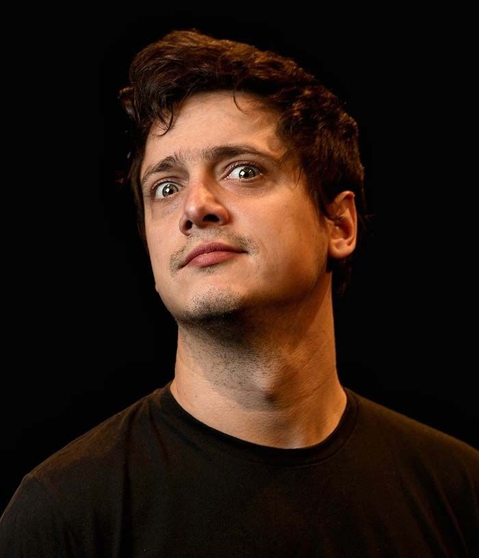
LUCIANO MELLERA
Comenzó en 2008 y se convirtió en referente del stand up
nacional e internacional. Su especial Infantiloide en
Netflix le dio gran proyección, y su humor observacional lo
distingue por transformar lo cotidiano en relatos simpáticos y
cercanos.
Conocé más en su cuenta de instagram: @luchomellera
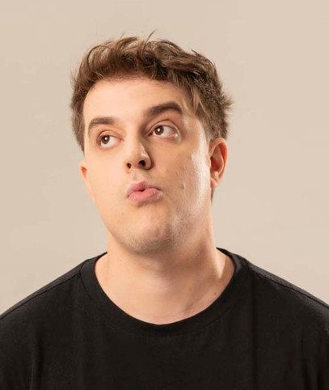
LUCAS LAURIENTE
Comediante argentino que arrancó en 2011 y rápidamente se
destacó en festivales y en Comedy Central. Su estilo fresco y
juvenil lo llevó a estrenar el especial
Todo lo que sería en 2018, consolidándose como una de las
voces nuevas del stand up.
Conocé más en su cuenta de instagram: @lucaslauriente
LUCAS LAURIENTE
Comediante argentino que arrancó en 2011 y rápidamente se
destacó en festivales y en Comedy Central. Su estilo fresco y
juvenil lo llevó a estrenar el especial
Todo lo que sería en 2018, consolidándose como una de las
voces nuevas del stand up.
Conocé más en su cuenta de instagram: @lucaslauriente
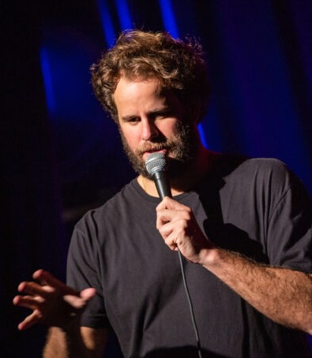
NICOLAS DE TRACY
Lleva más de diez años en la comedia, con giras y temporadas en
la Costa Atlántica. También trabajó como actor en cine y
televisión, y sus unipersonales como Desubicado y
Crónico
muestran su estilo absurdo y teatral.
Conocé más en su cuenta de instagram: @nicolasdetracy
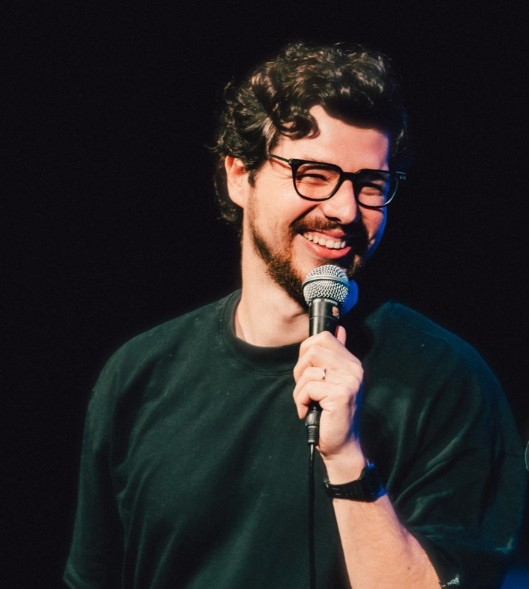
VICTOR MEDINA (NANUTRIA)
Nació en Venezuela y tras dejar la ingeniería en sistemas se
volcó al stand up. Actuó en Caracas, México y Argentina, donde
consolidó su carrera con un humor irónico y crítico, marcado por
su mirada cultural y espontánea.
Conocé más en su cuenta de instagram: @nanutria
VICTOR MEDINA (NANUTRIA)
Nació en Venezuela y tras dejar la ingeniería en sistemas se
volcó al stand up. Actuó en Caracas, México y Argentina, donde
consolidó su carrera con un humor irónico y crítico, marcado por
su mirada cultural y espontánea.
Conocé más en su cuenta de instagram: @nanutria
GALERIA DE FOTOS
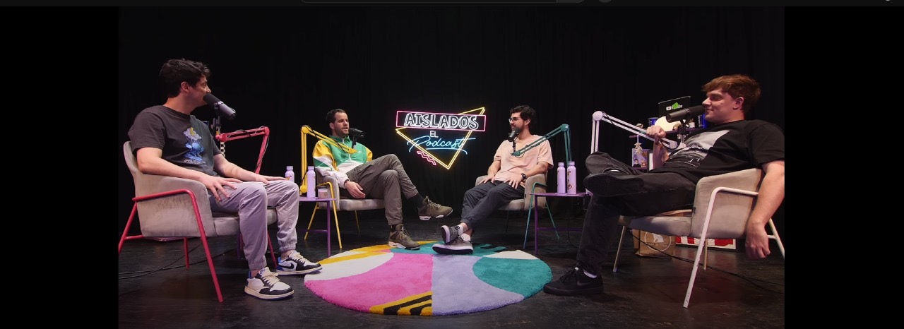
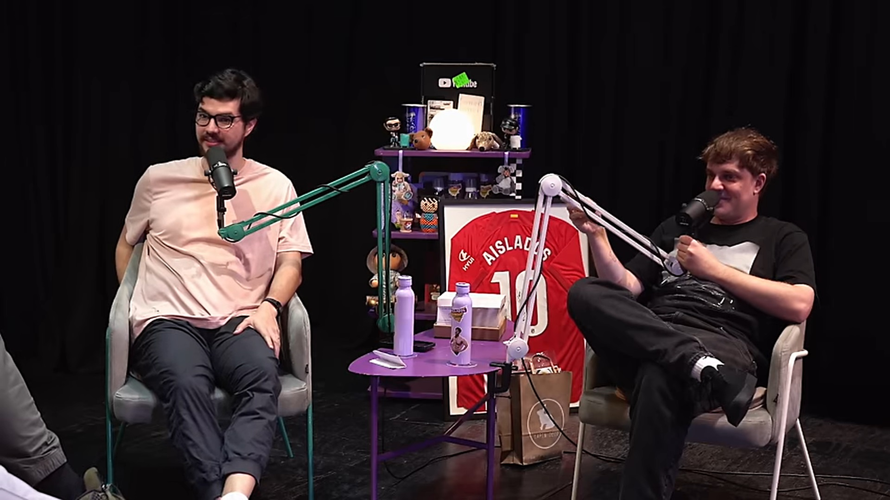
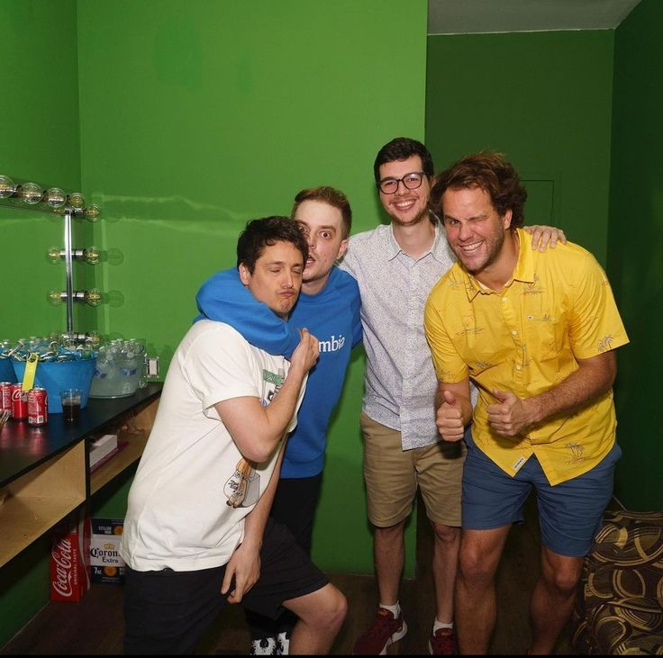
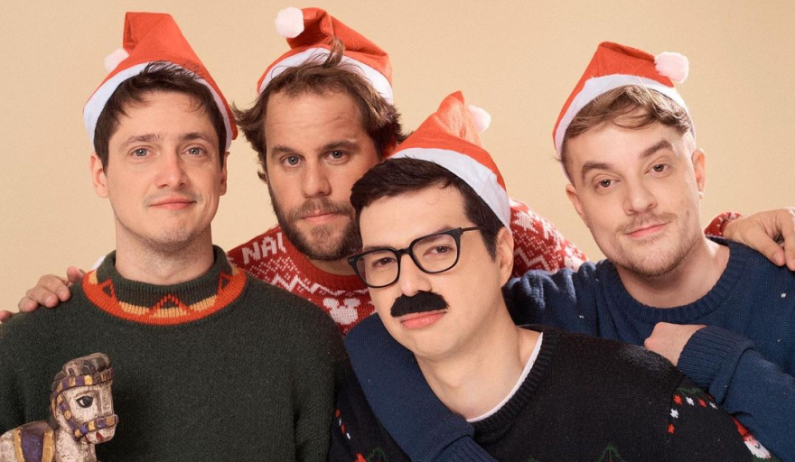
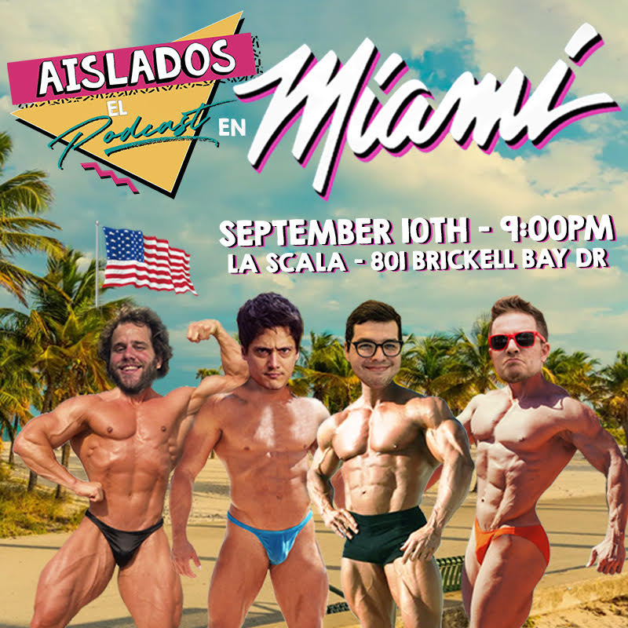
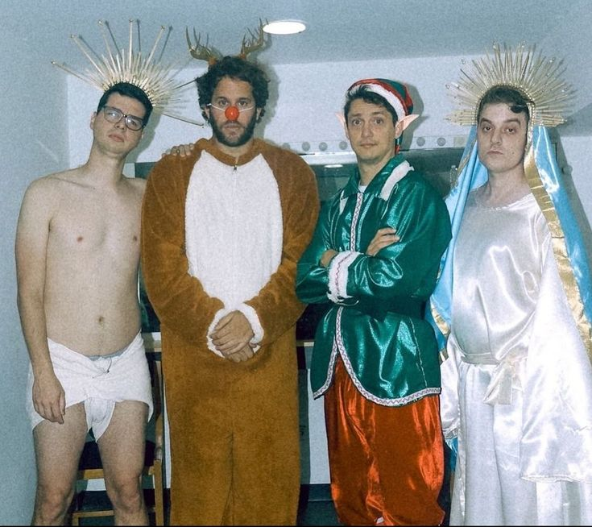
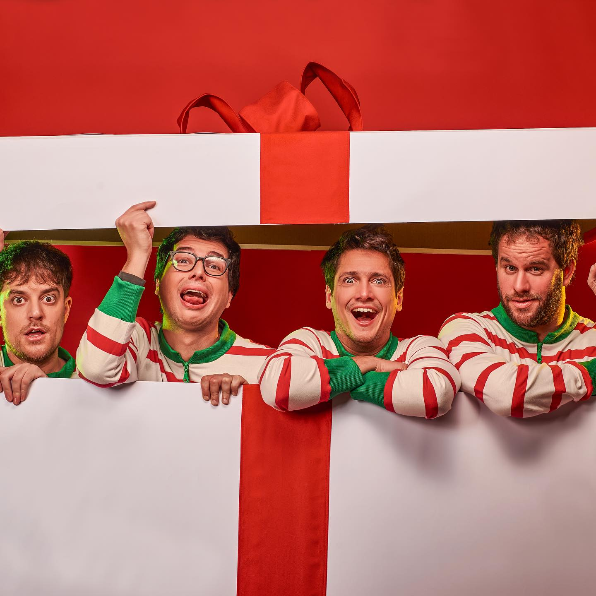
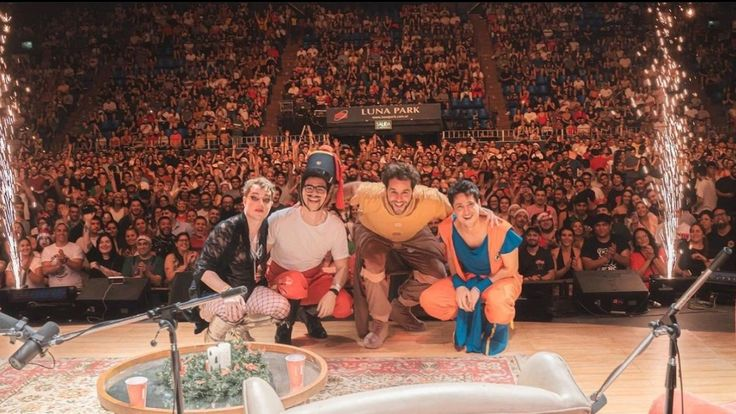
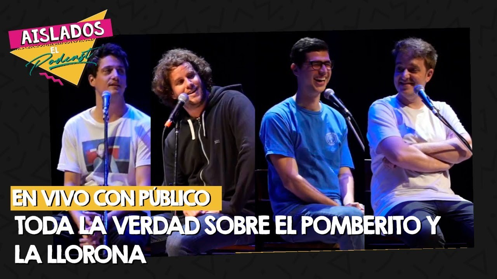